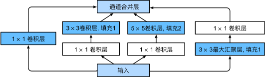

含并行连结的网络（GoogLeNet）#
在2014年的ImageNet图像识别挑战赛中，一个名叫GoogLeNet的网络架构大放异彩。
GoogLeNet吸收了NiN中串联网络的思想，并在此基础上做了改进。
这篇论文的一个重点是解决了什么样大小的卷积核最合适的问题。
毕竟，以前流行的网络使用小到\(1 \times 1\)，大到\(11 \times 11\)的卷积核。
本文的一个观点是，有时使用不同大小的卷积核组合是有利的。
本节将介绍一个稍微简化的GoogLeNet版本：我们省略了一些为稳定训练而添加的特殊特性，现在有了更好的训练方法，这些特性不是必要的。

Inception块#
在GoogLeNet中，基本的卷积块被称为Inception块（Inception block）。这很可能得名于电影《盗梦空间》（Inception），因为电影中的一句话“我们需要走得更深”（“We need to go deeper”）。
如上图所示，Inception块由四条并行路径组成。 前三条路径使用窗口大小为\(1\times 1\)、\(3\times 3\)和\(5\times 5\)的卷积层，从不同空间大小中提取信息。 中间的两条路径在输入上执行\(1\times 1\)卷积，以减少通道数，从而降低模型的复杂性。 第四条路径使用\(3\times 3\)最大汇聚层，然后使用\(1\times 1\)卷积层来改变通道数。 这四条路径都使用合适的填充来使输入与输出的高和宽一致，最后我们将每条线路的输出在通道维度上连结，并构成Inception块的输出。在Inception块中，通常调整的超参数是每层输出通道数。
下图可以看到每个模块的通道数
import torch
from torch import nn
from torch.nn import functional as F
from d2l import torch as d2l
class Inception(nn.Module):
# c1--c4是每条路径的输出通道数
def __init__(self, in_channels, c1, c2, c3, c4, **kwargs):
super(Inception, self).__init__(**kwargs)
# 线路1，单1x1卷积层
self.p1_1 = nn.Conv2d(in_channels, c1, kernel_size=1)
# 线路2，1x1卷积层后接3x3卷积层
self.p2_1 = nn.Conv2d(in_channels, c2[0], kernel_size=1)
self.p2_2 = nn.Conv2d(c2[0], c2[1], kernel_size=3, padding=1)
# 线路3，1x1卷积层后接5x5卷积层
self.p3_1 = nn.Conv2d(in_channels, c3[0], kernel_size=1)
self.p3_2 = nn.Conv2d(c3[0], c3[1], kernel_size=5, padding=2)
# 线路4，3x3最大汇聚层后接1x1卷积层
self.p4_1 = nn.MaxPool2d(kernel_size=3, stride=1, padding=1)
self.p4_2 = nn.Conv2d(in_channels, c4, kernel_size=1)
def forward(self, x):
p1 = F.relu(self.p1_1(x))
p2 = F.relu(self.p2_2(F.relu(self.p2_1(x))))
p3 = F.relu(self.p3_2(F.relu(self.p3_1(x))))
p4 = F.relu(self.p4_2(self.p4_1(x)))
# 在通道维度上连结输出
return torch.cat((p1, p2, p3, p4), dim=1)
GoogLeNet模型#
如下图所示，GoogLeNet一共使用9个Inception块和全局平均汇聚层的堆叠来生成其估计值。Inception块之间的最大汇聚层可降低维度。 第一个模块类似于AlexNet和LeNet，Inception块的组合从VGG继承，全局平均汇聚层避免了在最后使用全连接层。

现在，我们逐一实现GoogLeNet的每个模块。第一个模块使用64个通道、\(7\times 7\)卷积层。
b1 = nn.Sequential(nn.Conv2d(1, 64, kernel_size=7, stride=2, padding=3),
nn.ReLU(),
nn.MaxPool2d(kernel_size=3, stride=2, padding=1))
第二个模块使用两个卷积层：第一个卷积层是64个通道、\(1\times 1\)卷积层；第二个卷积层使用将通道数量增加三倍的\(3\times 3\)卷积层。 这对应于Inception块中的第二条路径。
b2 = nn.Sequential(nn.Conv2d(64, 64, kernel_size=1),
nn.ReLU(),
nn.Conv2d(64, 192, kernel_size=3, padding=1),
nn.ReLU(),
nn.MaxPool2d(kernel_size=3, stride=2, padding=1))
第三个模块串联两个完整的Inception块。 第一个Inception块的输出通道数为\(64+128+32+32=256\)，四个路径之间的输出通道数量比为\(64:128:32:32=2:4:1:1\)。 第二个和第三个路径首先将输入通道的数量分别减少到\(96/192=1/2\)和\(16/192=1/12\)，然后连接第二个卷积层。第二个Inception块的输出通道数增加到\(128+192+96+64=480\)，四个路径之间的输出通道数量比为\(128:192:96:64 = 4:6:3:2\)。 第二条和第三条路径首先将输入通道的数量分别减少到\(128/256=1/2\)和\(32/256=1/8\)。
b3 = nn.Sequential(Inception(192, 64, (96, 128), (16, 32), 32),
Inception(256, 128, (128, 192), (32, 96), 64),
nn.MaxPool2d(kernel_size=3, stride=2, padding=1))
第四模块更加复杂， 它串联了5个Inception块，其输出通道数分别是\(192+208+48+64=512\)、\(160+224+64+64=512\)、\(128+256+64+64=512\)、\(112+288+64+64=528\)和\(256+320+128+128=832\)。 这些路径的通道数分配和第三模块中的类似，首先是含\(3×3\)卷积层的第二条路径输出最多通道，其次是仅含\(1×1\)卷积层的第一条路径，之后是含\(5×5\)卷积层的第三条路径和含\(3×3\)最大汇聚层的第四条路径。 其中第二、第三条路径都会先按比例减小通道数。 这些比例在各个Inception块中都略有不同。
b4 = nn.Sequential(Inception(480, 192, (96, 208), (16, 48), 64),
Inception(512, 160, (112, 224), (24, 64), 64),
Inception(512, 128, (128, 256), (24, 64), 64),
Inception(512, 112, (144, 288), (32, 64), 64),
Inception(528, 256, (160, 320), (32, 128), 128),
nn.MaxPool2d(kernel_size=3, stride=2, padding=1))
第五模块包含输出通道数为\(256+320+128+128=832\)和\(384+384+128+128=1024\)的两个Inception块。 其中每条路径通道数的分配思路和第三、第四模块中的一致，只是在具体数值上有所不同。 需要注意的是，第五模块的后面紧跟输出层，该模块同NiN一样使用全局平均汇聚层，将每个通道的高和宽变成1。 最后我们将输出变成二维数组，再接上一个输出个数为标签类别数的全连接层。
b5 = nn.Sequential(Inception(832, 256, (160, 320), (32, 128), 128),
Inception(832, 384, (192, 384), (48, 128), 128),
nn.AdaptiveAvgPool2d((1,1)),
nn.Flatten())
net = nn.Sequential(b1, b2, b3, b4, b5, nn.Linear(1024, 10))
GoogLeNet模型的计算复杂，而且不如VGG那样便于修改通道数。 为了使Fashion-MNIST上的训练短小精悍，我们将输入的高和宽从224降到96，这简化了计算。下面演示各个模块输出的形状变化。
X = torch.rand(size=(1, 1, 96, 96))
for layer in net:
X = layer(X)
print(layer.__class__.__name__,'output shape:\t', X.shape)
Sequential output shape: torch.Size([1, 64, 24, 24])
Sequential output shape: torch.Size([1, 192, 12, 12])
Sequential output shape: torch.Size([1, 480, 6, 6])
Sequential output shape: torch.Size([1, 832, 3, 3])
Sequential output shape: torch.Size([1, 1024])
Linear output shape: torch.Size([1, 10])
训练模型#
和以前一样，我们使用Fashion-MNIST数据集来训练我们的模型。在训练之前，我们将图片转换为\(96 \times 96\)分辨率。
#train_iter, test_iter = d2l.load_data_fashion_mnist(batch_size=128, resize=96)
#下载模型使用
import os
from torch.utils.data import Dataset, DataLoader
from torchvision import transforms,datasets
import matplotlib.pyplot as plt
image_size = 96
data_transform = transforms.Compose([
#transforms.ToPILImage(), # 将torch.Tensor或numpy.ndarray类型图像转为PIL.Image类型图像。这段里面可以移除transforms.ToPILImage()，因为 FashionMNIST 数据集已经是 PIL.Image 类型
transforms.Resize(image_size),#按给定尺寸对图像进行缩放
transforms.ToTensor() #将PIL.Image或numpy.ndarray类型图像转为torch.Tensor类型图像
])
# train表示是否是训练集，download表示是否需要下载，transform表示是否需要进行数据变换
train_data = datasets.FashionMNIST(root='../raw/data/', train=True, download=True, transform=data_transform)
test_data = datasets.FashionMNIST(root='../raw/data/', train=False, download=True, transform=data_transform)
batch_size = 128
num_workers = 0 #mac 不知道为什么变为4也报错 # 对于Windows用户，这里应设置为0，否则会出现多线程错误
# DataLoader是一个用于生成batch数据的迭代器，可以设置batch_size、shuffle、num_workers等参数
#batch_size是指每个批次中包含的样本数量。shuffle=True表示在每个epoch开始时，将训练数据集打乱顺序，以增加模型的泛化能力。num_workers是指用于数据加载的线程数量，可以加快数据加载的速度。drop_last=True表示如果训练数据集的样本数量不能被batch_size整除，最后一个不完整的批次将被丢弃。
train_iter = DataLoader(train_data, batch_size=batch_size, shuffle=True, num_workers=num_workers, drop_last=True)
test_iter = DataLoader(test_data, batch_size=batch_size, shuffle=False, num_workers=num_workers)
lr, num_epochs = 0.1, 10
d2l.train_ch6(net, train_iter, test_iter, num_epochs, lr, d2l.try_gpu())
loss 0.259, train acc 0.901, test acc 0.895
2107.8 examples/sec on cuda:0